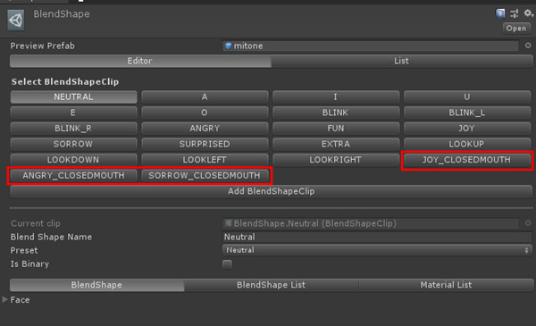
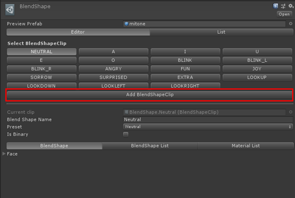
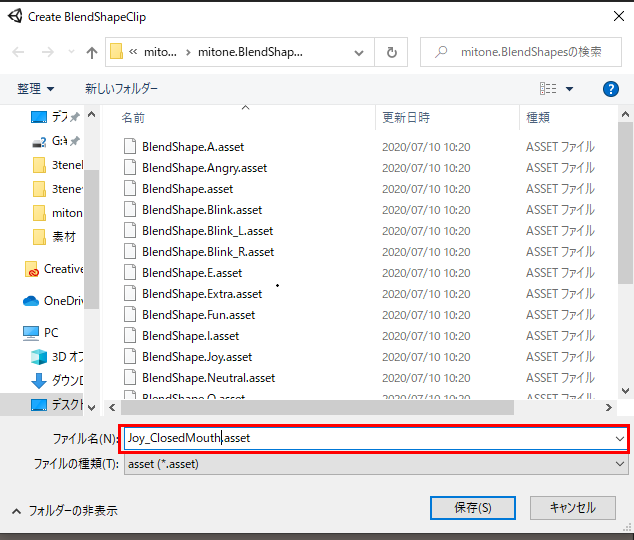
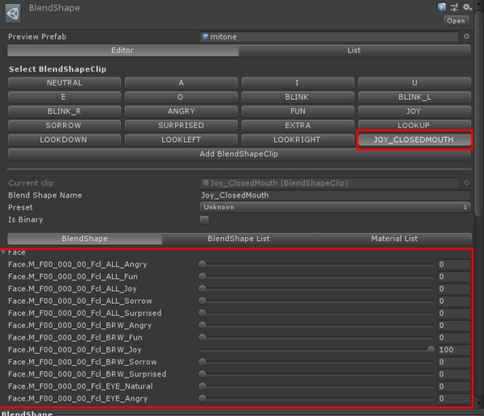
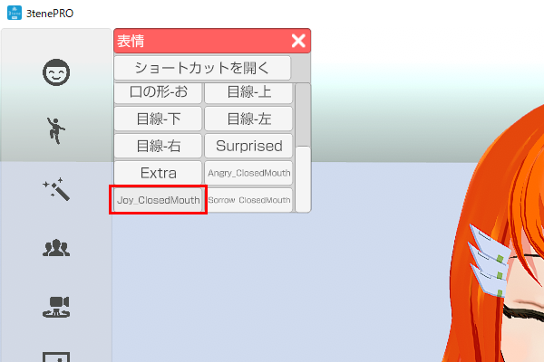

既存の VRM を編集し、表情 (BlendShape) を追加します。
(作成した BlendShape が優先となります。)
BlendShape名：Joy_ClosedMouth → 口だけを標準にした楽しい
BlendShape名：Angry_ClosedMouth → 口だけを標準にした怒り
BlendShape名：Sorrow_ClosedMouth → 口だけを標準にした悲しい

Unity 2019.4 .20 をインストールします。
※Unity 2019.4.20 のダウンロードはこちらから。UniVRM をインポートした Unity プロジェクトを用意し、Unity で読み込みます。
※Vrm3teneExtensionProject への直リンク。Unity のメニュー VRM のインポートから対象となる VRM を指定します。
Unity で VRM をインポートしたフォルダの .BlendShapes から選択できる
BlendShape の設定画面で「Add BlendShapeClip」をクリックすると、
新しく BlendShape を追加することが出来ます。

追加する際に BlendShape 名を該当の名前で作成します。
※「Joy_ClosedMouth」「Angry_ClosedMouth」「Sorrow_ClosedMouth」

編集する BlendShape 名を選択し、シェイプキーの値を設定します。
この時、口の形を大きく変形させると BlendShape「A」「I」「U」「E」「O」と競合し、
口の形が崩れる場合があります。（3tene内のリップシンク使用時）

BlendShape の設定が完了したら、VRMを出力し、3tene で読み込みます。
表情の変更で「Joy_ClosedMouth」「Angry_ClosedMouth」「Sorrow_ClosedMouth」
の動きを確認してください。正しく設定されている場合は、設定した表情へ変化します。

表情の設定に問題ない場合は自動表情変更で、設定に追加した表情に変化させることが出来ます。
※自動表情変更の手順は本ページ上記をご確認ください。